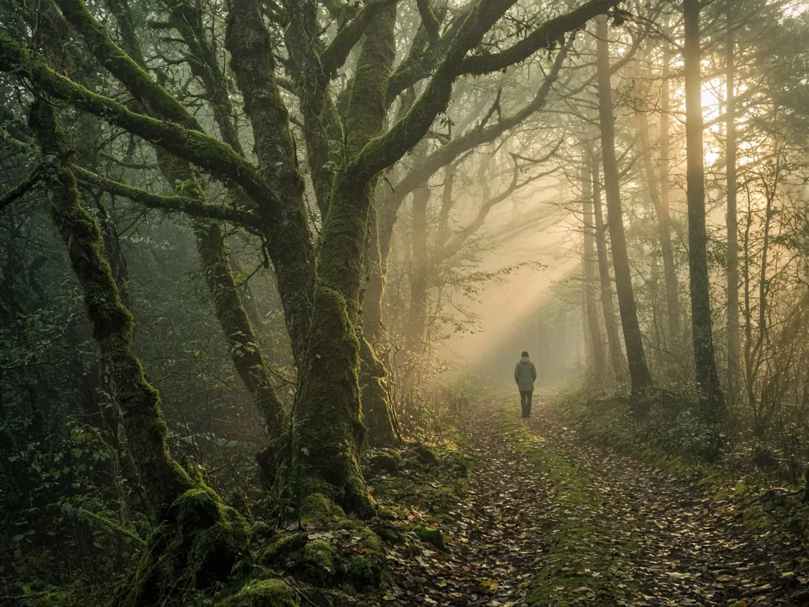

Mindful walking: meditation in motion
Most of us walk thousands of steps a day without ever really arriving anywhere. We walk to the car while reading messages, walk to the shop while composing a reply in our heads, walk the dog while thinking about the meeting we just left. Our feet are on the pavement, but our minds are everywhere else.
Mindful walking is a way of reclaiming those steps. It is the practice of bringing full, kind attention to the simple act of walking — the lift and fall of the feet, the shifting of weight, the air on your skin, the sounds and colours of the world around you. It is meditation in motion, and for many people it is easier and more inviting than sitting still.
Why walk instead of sit?
Seated meditation is wonderful, but it is not for everyone at every moment. When you are restless, anxious, or full of energy, sitting still can feel like trying to hold a beach ball underwater. Walking gives that energy somewhere to go. The rhythm of the steps is naturally soothing, and the constant stream of physical sensation offers a clear, tangible anchor for attention.
Walking practice also bridges the gap between "meditation time" and the rest of your life. Very few of us can spend an hour a day on a cushion, but almost all of us walk. If you can learn to be present for even a few minutes of ordinary walking, you have found a doorway to mindfulness that is always open.
“Walk as if you are kissing the earth with your feet.”
— Thich Nhat Hanh
Two ways to practice
There are two broad styles of walking meditation. Both are valuable, and you may find yourself drawn to one or the other depending on the day.
1. Slow, formal walking
This is the traditional style taught in many meditation retreats. You walk very slowly, back and forth along a short, straight path of ten to twenty paces — a hallway, a quiet stretch of garden, or the length of a room. Because you are not going anywhere, there is nothing to achieve and nowhere to arrive. The entire practice is the walking itself.
- Stand and settle. Begin at one end of your path. Stand still for a few breaths, feeling the weight of your body through the soles of your feet. Let your hands rest wherever is comfortable: by your sides, clasped in front, or behind your back.
- Lift, move, place. Begin walking at about half your normal pace, or slower. Silently note each phase of the step: lifting as the heel rises, moving as the foot swings forward, placing as it touches the ground and receives your weight.
- Pause and turn. When you reach the end of the path, stop. Feel yourself standing. Then turn slowly, with awareness, and pause again before walking back.
- Return when you wander. When you notice your mind has drifted — and it will — simply note where it went and bring your attention back to the sensations in your feet and legs.
Ten minutes of this can feel surprisingly deep. Many people find that slowing their body down helps slow their thoughts too.
2. Everyday mindful walking
This is walking at a natural pace, out in the world: through a park, along a beach, or on your daily route to work. The focus is broader. Rather than tracking every phase of each step, you rest your attention on the overall rhythm of walking and allow your awareness to open to your surroundings.
- Feet and rhythm. For the first few minutes, notice the steady pattern of your steps. You might sync your breath to them — for example, breathing in for three steps and out for three steps.
- The five senses. Then gradually widen your attention. What can you see: the movement of leaves, the colour of the sky, the textures of buildings? What can you hear, smell, feel on your skin?
- Noticing, not narrating. When you catch yourself commenting — "what an ugly car," "I should have worn a jacket" — gently let the commentary go and return to the raw experience of seeing, hearing, and moving.
Bringing nature into it
You can walk mindfully anywhere, even on a busy city street. But walking among trees, near water, or under an open sky can make the practice feel especially nourishing. Natural environments tend to hold our attention in a soft, effortless way — the drift of clouds, the sound of a stream — giving the busy, problem-solving parts of the mind a chance to rest.
If you can, find a green space near you and make it your regular walking spot. Return to it through the seasons. Notice how the same path changes from week to week: new buds, fallen leaves, the angle of the light. This kind of repeated, attentive relationship with a place is a quiet form of belonging.
Common questions
Can I listen to music or a podcast? For mindful walking, it is best to leave the headphones at home, at least for part of the walk. The aim is to experience what is actually here, including the sounds of your environment. A guided walking meditation can be a helpful exception when you are starting out.
What if I feel self-conscious walking slowly? Save the slow, formal practice for private spaces like your home or garden. Everyday mindful walking at a normal pace looks exactly like ordinary walking — no one will know you are meditating.
How long should I walk? Any amount helps. Start with ten minutes. You might also try mindful walking for just the first two minutes of every walk you already take, then let the rest of the walk be ordinary.
One step at a time
Mindful walking reminds us that presence does not require escaping our lives. It is available in the most ordinary movement we make. The next time you walk to the corner, try feeling the ground beneath you, the air around you, and the simple miracle of a body carrying you forward. You may find that you arrive somewhere you had been passing by for years.

Written by Elrond
Founder of Willowhush. Practicing, forgetting, and beginning again, one breath at a time. More about Willowhush →